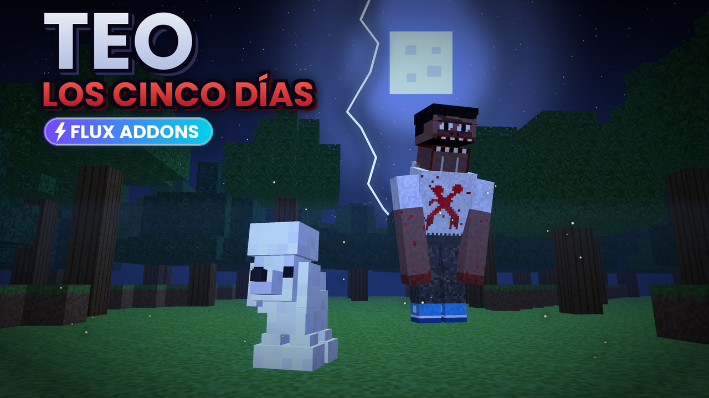

Teo Addon
Una nueva experiencia para Minecraft Bedrock. Descubrí este proyecto creado por FLUX.
● PROYECTO CREADO
Descubrí nuevas experiencias para Minecraft.
Addons originales creados por FLUX.
Descubrí las creaciones de FLUX.

Una nueva experiencia para Minecraft Bedrock. Descubrí este proyecto creado por FLUX.
● PROYECTO CREADOEstamos preparando nuevas creaciones para Minecraft.
● EN DESARROLLO
FLUX es un proyecto independiente dedicado a crear
addons y experiencias para Minecraft Bedrock.
Cada proyecto comienza con una idea y se convierte
en una nueva aventura.
Creado por Tobi ponx.